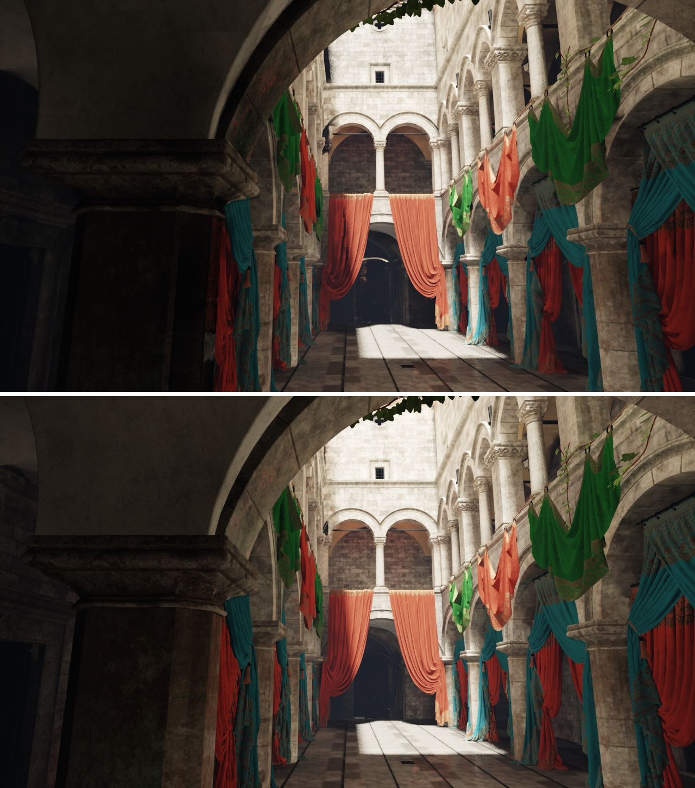
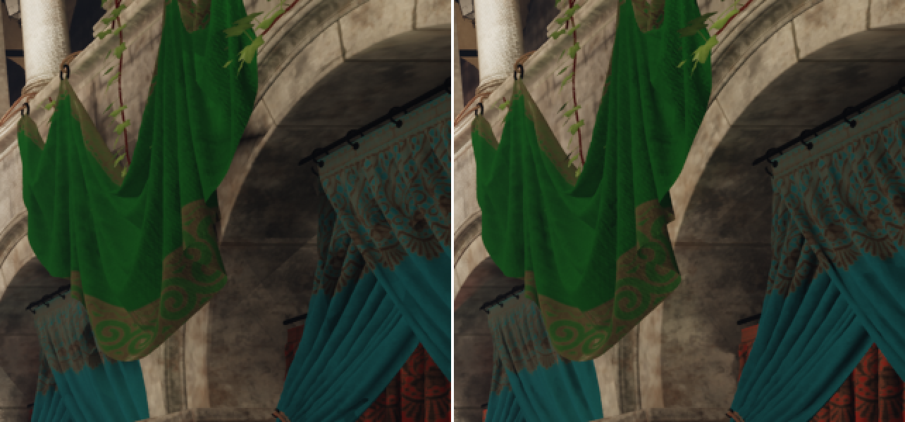

GI probes: moment-based visibility instead of a plane
Probe visibility is stored as Chebyshev moments — the dark band on the Sponza arches is gone.




A rebake replaces only the 96 visibility texels per probe; sun, sky and point-light transport stay the same. Sponza — 10,710 probes and 10.8 M triangles — rebakes in about 18 seconds on two cores.
An old plane-visibility cache renders bit-identically to before the change (maximum channel difference 0).
- Verified
- Cloud Linux, llvmpipe GLES 3.2: High before/after captures, HDR GPU checks 1–53 pass on Linux GL.
- Limitations
- Moments still leak slightly through thin geometry; probes inside geometry are not relocated. MSL, Metal captures and Android are unverified.